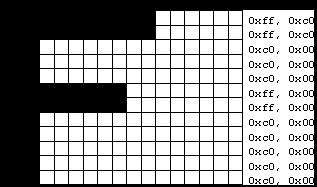
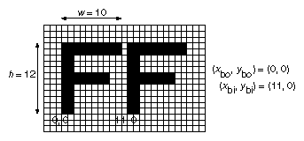
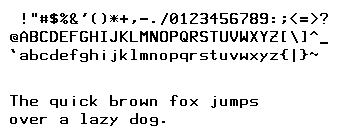
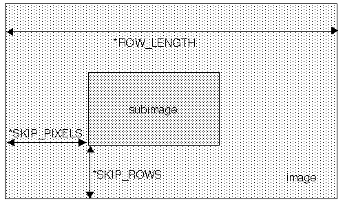
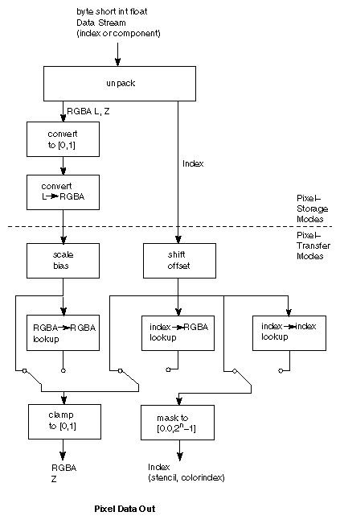
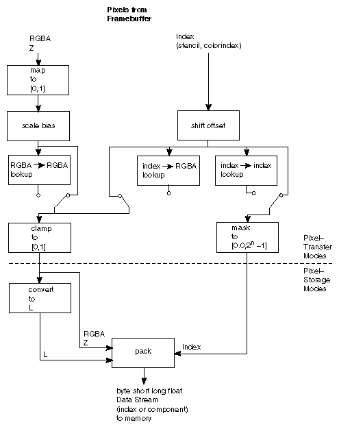

After reading this chapter, you'll be able to do the following:
Read pixel data (bitmaps and images) from the framebuffer into processor
memory and from memory into the framebuffer
Copy pixel data from one buffer to another, or to another location in
the same buffer
Magnify or reduce an image as it's written to the framebuffer
Control pixel-data formatting and perform other transformations as the data is moved to and from the framebuffer
Image data, which might have been scanned in or calculated
This chapter describes how to read pixel data (bitmaps and images) from the framebuffer into processor memory (and vice versa), and how to copy pixel data from one buffer to another, or within a single buffer to another position. This chapter contains the following major sections:
"Images" presents the basic information about reading and copying pixel
data. It also explains how to magnify or reduce an image as it's written
to the framebuffer.
"Storing, Transforming, and Mapping Pixels" covers all the details of how pixel data is stored in memory and how to transform it as it's moved into or out of memory.
OpenGL provides only the lowest level of support for drawing strings of characters and manipulating fonts. The commands glRasterPos*() and glBitmap() position and draw a single bitmap on the screen. In addition, through the display-list mechanism, you can use a sequence of character codes to index into a corresponding series of bitmaps representing those characters. See Chapter 4 for more information about display lists. You'll have to write your own routines to provide any other support you need for manipulating bitmaps, fonts, and strings of characters.
As an example, consider Example 8-1 , which draws the character F three times on the screen. Figure 8-1 shows the F as a bitmap and its corresponding bitmap data.

Figure 8-1 : A Bitmapped F and Its Data
Example 8-1 : Drawing a Bitmapped Character: drawf.c
#include <GL/gl.h>
#include <GL/glu.h>
#include "aux.h"
GLubyte rasters[24] = {
0xc0, 0x00, 0xc0, 0x00, 0xc0, 0x00, 0xc0, 0x00,
0xc0, 0x00, 0xff, 0x00, 0xff, 0x00, 0xc0, 0x00,
0xc0, 0x00, 0xc0, 0x00, 0xff, 0xc0, 0xff, 0xc0};
void myinit(void)
{
glPixelStorei(GL_UNPACK_ALIGNMENT, 1);
glClearColor(0.0, 0.0, 0.0, 0.0);
}
void display(void)
{
glClear(GL_COLOR_BUFFER_BIT);
glColor3f(1.0, 1.0, 1.0);
glRasterPos2i (20.5, 20.5);
glBitmap(10, 12, 0.0, 0.0, 12.0, 0.0, rasters);
glBitmap(10, 12, 0.0, 0.0, 12.0, 0.0, rasters);
glBitmap(10, 12, 0.0, 0.0, 12.0, 0.0, rasters);
glFlush();
}
void myReshape(GLsizei w, GLsizei h)
{
glViewport(0, 0, w, h);
glMatrixMode(GL_PROJECTION);
glLoadIdentity();
glOrtho(0, w, 0, h, -1.0, 1.0);
glMatrixMode(GL_MODELVIEW);
}
int main(int argc, char** argv)
{
auxInitDisplayMode(AUX_SINGLE | AUX_RGBA);
auxInitPosition(0, 0, 500, 500);
auxInitWindow(argv[0]);
myinit();
auxReshapeFunc(myReshape);
auxMainLoop(display);
}
In Figure 8-1 , note that the visible part of the F character is at most
10 bits wide. Bitmap data is always stored in chunks that are multiples
of 8 bits, but the width of the actual bitmap doesn't have to be a multiple
of 8. The bits making up a bitmap are drawn starting from the lower left
corner: First, the bottom row is drawn, then the next row above it, and
so on. As you can tell from the code, the bitmap is stored in memory in
this order - the array of rasters begins with 0xc0, 0x00, 0xc0, 0x00 for
the bottom two rows of the F and continues to 0xff, 0xc0, 0xff, 0xc0 for
the top two rows.
The commands of interest in this example are glRasterPos2i() and glBitmap(); they're discussed in detail in the next section. For now, ignore the call to glPixelStorei(); it describes how the bitmap data is stored in computer memory. This topic is discussed in "Controlling Pixel-Storage Modes."
glRasterPos2i(20, 20);void glRasterPos{234}{sifd}{v}(TYPE x, TYPE y, TYPE z, TYPE w);
Sets the current raster position. The x, y, z, and w arguments specify the coordinates of the raster position. If glRasterPos2*() is used, z is implicitly set to zero and w is implicitly set to one; similarly, with glRasterPos3*(), w is set to one.
The coordinates of the raster position are transformed to screen coordinates in exactly the same way as coordinates supplied with a glVertex*() command (that is, with the modelview and perspective matrices). After transformation, they either define a valid spot in the window on the screen, or they're clipped out because the transformed coordinates lie outside the viewport. If the transformed point is clipped out, the current raster position is invalid.
To obtain the current raster position, you can use the query command glGetFloatv() with GL_CURRENT_RASTER_POSITION as the first argument. The second argument should be a pointer to an allocated array that can hold the (x, y, z, w) values as floating-point numbers. Call glGetBooleanv() with GL_CURRENT_RASTER_POSITION_VALID as the first argument to determine whether the current raster position is valid.
Draws the bitmap specified by bitmap, which is a pointer to the bitmap image. The origin of the bitmap is placed at the most recently defined current raster position. If the current raster position is invalid, nothing is drawn, and the raster position remains invalid. The width and height arguments indicate the width and height, in pixels, of the bitmap. The width need not be a multiple of 8, although the data is stored in unsigned characters of 8 bits each. (In the F example, it wouldn't matter if there were garbage bits in the data beyond the tenth bit; since glBitmap() was called with a width of 10, only 10 bits of the row are rendered.) Use xbo and ybo to define the origin of the bitmap (positive values move the origin up and to the right; negative values move it down and to the left); xbi and ybi indicate the x and y increments that are added to the raster position after the bitmap is rasterized (see Figure 8-2 ).

Figure 8-2 : A Bitmap and Its Associated Parameters
Allowing the origin of the bitmap to be placed arbitrarily makes it easy for characters to extend below the origin (typically used for characters with descenders, such as g, j, and y), or to extend beyond the left of the origin (used for various swash characters, which have extended flourishes, or for characters in fonts that lean to the left).
After the bitmap is drawn, the current raster position is advanced by xbi and ybi in the x- and y-directions, respectively. For standard Latin fonts, ybi is typically 0.0 and xbi is positive (since successive characters are drawn from left to right). For Hebrew, where characters go from right to left, the xbi values would typically be negative. Fonts that draw successive characters vertically in columns would use zero for xbi and nonzero values for ybi. In Figure 8-2 , each time the F is drawn, the current raster position advances by 12 pixels, allowing a 2-pixel space between successive characters.
Since xbo, ybo, xbi, and ybi are floating-point values, characters need not be an integral number of pixels wide. Actual characters are drawn on exact pixel boundaries, but the current raster position is kept in floating point so that each character is drawn as close as possible to where it belongs. For example, if the code in the F example was modified so that xbi is 11.5 instead of 12, and if more characters were drawn, the space between letters would alternate between one and two pixels, giving the best approximation to the requested 1.5-pixel space. Note that bitmaps can't be used for rotatable fonts because the bitmap is always drawn aligned to the x and y framebuffer axes.
A font typically consists of a set of characters, where each character has an identifying number (usually the ASCII code), and a drawing method. For a standard ASCII character set, the capital letter A is number 65, B is 66, and so on. The string "DAB" would be represented by the three indices 68, 65, 66. In the simplest approach, display-list number 65 would draw an A, number 66 would draw a B, and so on. Then, to draw the string 68, 65, 66, just execute the corresponding display lists.
You can use the command glCallLists() in just this way.
void glCallLists(GLsizei n, GLenum type, const GLvoid *lists);The first argument, n, indicates the number of characters to be drawn, type is usually GL_BYTE, and lists is an array of character codes.
Since many applications need to draw character strings in multiple fonts and sizes, this simplest approach isn't convenient. Instead, you'd like to use 65 as A no matter what font is currently active. You could force font 1 to encode A, B, and C as 1065, 1066, 1067, and font 2 as 2065, 2066, 2067, but then any numbers larger than 256 would no longer fit in an 8-bit byte. A better solution is to add an offset to every entry in the string and to choose the display list. In this case, font 1 has A, B, and C represented by 1065, 1066, and 1067, and in font 2, they might be 2065, 2066, and 2067. Then to draw characters in font 1, set the offset to 1000 and draw display lists 65, 66, and 67. To draw that same string in font 2, set the offset to 2000 and draw the same lists.
With this approach, use the command glListBase() to set the offset. For the preceding examples, it should be called with 1000 or 2000 as the (only) argument. Now what you need is a contiguous list of unused display-list numbers, which you can obtain from glGenLists().
GLuint glGenLists(GLsizei range);This function returns a block of range display-list identifiers. The returned lists are all marked as "used" even though they're empty, so that subsequent calls to glGenLists() never return the same lists (unless you've explicitly deleted them previously). Thus, if you use 4 as the argument and if glGenLists() returns 81, you can use display-list identifiers 81, 82, 83, and 84 for your characters. If glGenLists() can't find a block of unused identifiers of the requested length, it returns 0. (Note that the command glDeleteLists() makes it easy to delete all the lists associated with a font in a single operation.)
Most American and European fonts have a small number of characters (fewer than 256), so it's easy to represent each character with a different code that can be stored in a single byte. Asian fonts, among others, may require much larger character sets, so a byte-per-character encoding is impossible. OpenGL allows strings to be composed of one-, two-, three-, or four-byte characters through the type parameter in glCallLists(). This parameter can have any of the following values:
GL_BYTE GL_UNSIGNED_BYTE
GL_SHORT GL_UNSIGNED_SHORT
GL_INT GL_UNSIGNED_INT
GL_FLOAT GL_2_BYTES
GL_3_BYTES GL_4_BYTES
See "Executing Multiple Display Lists" for more information about these values.

Figure 8-3 : A Complete Font Definition
Example 8-2 : Defining a Complete Font: font.c
#include <GL/gl.h>
#include <GL/glu.h>
#include "aux.h"
GLubyte rasters[][13] = {
{0x00, 0x00, 0x00, 0x00, 0x00, 0x00, 0x00, 0x00, 0x00, 0x00, 0x00, 0x00, 0x00},
{0x00, 0x00, 0x18, 0x18, 0x00, 0x00, 0x18, 0x18, 0x18, 0x18, 0x18, 0x18, 0x18},
{0x00, 0x00, 0x00, 0x00, 0x00, 0x00, 0x00, 0x00, 0x00, 0x36, 0x36, 0x36, 0x36},
{0x00, 0x00, 0x00, 0x66, 0x66, 0xff, 0x66, 0x66, 0xff, 0x66, 0x66, 0x00, 0x00},
{0x00, 0x00, 0x18, 0x7e, 0xff, 0x1b, 0x1f, 0x7e, 0xf8, 0xd8, 0xff, 0x7e, 0x18},
{0x00, 0x00, 0x0e, 0x1b, 0xdb, 0x6e, 0x30, 0x18, 0x0c, 0x76, 0xdb, 0xd8, 0x70},
{0x00, 0x00, 0x7f, 0xc6, 0xcf, 0xd8, 0x70, 0x70, 0xd8, 0xcc, 0xcc, 0x6c, 0x38},
{0x00, 0x00, 0x00, 0x00, 0x00, 0x00, 0x00, 0x00, 0x00, 0x18, 0x1c, 0x0c, 0x0e},
{0x00, 0x00, 0x0c, 0x18, 0x30, 0x30, 0x30, 0x30, 0x30, 0x30, 0x30, 0x18, 0x0c},
{0x00, 0x00, 0x30, 0x18, 0x0c, 0x0c, 0x0c, 0x0c, 0x0c, 0x0c, 0x0c, 0x18, 0x30},
{0x00, 0x00, 0x00, 0x00, 0x99, 0x5a, 0x3c, 0xff, 0x3c, 0x5a, 0x99, 0x00, 0x00},
{0x00, 0x00, 0x00, 0x18, 0x18, 0x18, 0xff, 0xff, 0x18, 0x18, 0x18, 0x00, 0x00},
{0x00, 0x00, 0x30, 0x18, 0x1c, 0x1c, 0x00, 0x00, 0x00, 0x00, 0x00, 0x00, 0x00},
{0x00, 0x00, 0x00, 0x00, 0x00, 0x00, 0xff, 0xff, 0x00, 0x00, 0x00, 0x00, 0x00},
{0x00, 0x00, 0x00, 0x38, 0x38, 0x00, 0x00, 0x00, 0x00, 0x00, 0x00, 0x00, 0x00},
{0x00, 0x60, 0x60, 0x30, 0x30, 0x18, 0x18, 0x0c, 0x0c, 0x06, 0x06, 0x03, 0x03},
{0x00, 0x00, 0x3c, 0x66, 0xc3, 0xe3, 0xf3, 0xdb, 0xcf, 0xc7, 0xc3, 0x66, 0x3c},
{0x00, 0x00, 0x7e, 0x18, 0x18, 0x18, 0x18, 0x18, 0x18, 0x18, 0x78, 0x38, 0x18},
{0x00, 0x00, 0xff, 0xc0, 0xc0, 0x60, 0x30, 0x18, 0x0c, 0x06, 0x03, 0xe7, 0x7e},
{0x00, 0x00, 0x7e, 0xe7, 0x03, 0x03, 0x07, 0x7e, 0x07, 0x03, 0x03, 0xe7, 0x7e},
{0x00, 0x00, 0x0c, 0x0c, 0x0c, 0x0c, 0x0c, 0xff, 0xcc, 0x6c, 0x3c, 0x1c, 0x0c},
{0x00, 0x00, 0x7e, 0xe7, 0x03, 0x03, 0x07, 0xfe, 0xc0, 0xc0, 0xc0, 0xc0, 0xff},
{0x00, 0x00, 0x7e, 0xe7, 0xc3, 0xc3, 0xc7, 0xfe, 0xc0, 0xc0, 0xc0, 0xe7, 0x7e},
{0x00, 0x00, 0x30, 0x30, 0x30, 0x30, 0x18, 0x0c, 0x06, 0x03, 0x03, 0x03, 0xff},
{0x00, 0x00, 0x7e, 0xe7, 0xc3, 0xc3, 0xe7, 0x7e, 0xe7, 0xc3, 0xc3, 0xe7, 0x7e},
{0x00, 0x00, 0x7e, 0xe7, 0x03, 0x03, 0x03, 0x7f, 0xe7, 0xc3, 0xc3, 0xe7, 0x7e},
{0x00, 0x00, 0x00, 0x38, 0x38, 0x00, 0x00, 0x38, 0x38, 0x00, 0x00, 0x00, 0x00},
{0x00, 0x00, 0x30, 0x18, 0x1c, 0x1c, 0x00, 0x00, 0x1c, 0x1c, 0x00, 0x00, 0x00},
{0x00, 0x00, 0x06, 0x0c, 0x18, 0x30, 0x60, 0xc0, 0x60, 0x30, 0x18, 0x0c, 0x06},
{0x00, 0x00, 0x00, 0x00, 0xff, 0xff, 0x00, 0xff, 0xff, 0x00, 0x00, 0x00, 0x00},
{0x00, 0x00, 0x60, 0x30, 0x18, 0x0c, 0x06, 0x03, 0x06, 0x0c, 0x18, 0x30, 0x60},
{0x00, 0x00, 0x18, 0x00, 0x00, 0x18, 0x18, 0x0c, 0x06, 0x03, 0xc3, 0xc3, 0x7e},
{0x00, 0x00, 0x3f, 0x60, 0xcf, 0xdb, 0xd3, 0xdd, 0xc3, 0x7e, 0x00, 0x00, 0x00},
{0x00, 0x00, 0xc3, 0xc3, 0xc3, 0xc3, 0xff, 0xc3, 0xc3, 0xc3, 0x66, 0x3c, 0x18},
{0x00, 0x00, 0xfe, 0xc7, 0xc3, 0xc3, 0xc7, 0xfe, 0xc7, 0xc3, 0xc3, 0xc7, 0xfe},
{0x00, 0x00, 0x7e, 0xe7, 0xc0, 0xc0, 0xc0, 0xc0, 0xc0, 0xc0, 0xc0, 0xe7, 0x7e},
{0x00, 0x00, 0xfc, 0xce, 0xc7, 0xc3, 0xc3, 0xc3, 0xc3, 0xc3, 0xc7, 0xce, 0xfc},
{0x00, 0x00, 0xff, 0xc0, 0xc0, 0xc0, 0xc0, 0xfc, 0xc0, 0xc0, 0xc0, 0xc0, 0xff},
{0x00, 0x00, 0xc0, 0xc0, 0xc0, 0xc0, 0xc0, 0xc0, 0xfc, 0xc0, 0xc0, 0xc0, 0xff},
{0x00, 0x00, 0x7e, 0xe7, 0xc3, 0xc3, 0xcf, 0xc0, 0xc0, 0xc0, 0xc0, 0xe7, 0x7e},
{0x00, 0x00, 0xc3, 0xc3, 0xc3, 0xc3, 0xc3, 0xff, 0xc3, 0xc3, 0xc3, 0xc3, 0xc3},
{0x00, 0x00, 0x7e, 0x18, 0x18, 0x18, 0x18, 0x18, 0x18, 0x18, 0x18, 0x18, 0x7e},
{0x00, 0x00, 0x7c, 0xee, 0xc6, 0x06, 0x06, 0x06, 0x06, 0x06, 0x06, 0x06, 0x06},
{0x00, 0x00, 0xc3, 0xc6, 0xcc, 0xd8, 0xf0, 0xe0, 0xf0, 0xd8, 0xcc, 0xc6, 0xc3},
{0x00, 0x00, 0xff, 0xc0, 0xc0, 0xc0, 0xc0, 0xc0, 0xc0, 0xc0, 0xc0, 0xc0, 0xc0},
{0x00, 0x00, 0xc3, 0xc3, 0xc3, 0xc3, 0xc3, 0xc3, 0xdb, 0xff, 0xff, 0xe7, 0xc3},
{0x00, 0x00, 0xc7, 0xc7, 0xcf, 0xcf, 0xdf, 0xdb, 0xfb, 0xf3, 0xf3, 0xe3, 0xe3},
{0x00, 0x00, 0x7e, 0xe7, 0xc3, 0xc3, 0xc3, 0xc3, 0xc3, 0xc3, 0xc3, 0xe7, 0x7e},
{0x00, 0x00, 0xc0, 0xc0, 0xc0, 0xc0, 0xc0, 0xfe, 0xc7, 0xc3, 0xc3, 0xc7, 0xfe},
{0x00, 0x00, 0x3f, 0x6e, 0xdf, 0xdb, 0xc3, 0xc3, 0xc3, 0xc3, 0xc3, 0x66, 0x3c},
{0x00, 0x00, 0xc3, 0xc6, 0xcc, 0xd8, 0xf0, 0xfe, 0xc7, 0xc3, 0xc3, 0xc7, 0xfe},
{0x00, 0x00, 0x7e, 0xe7, 0x03, 0x03, 0x07, 0x7e, 0xe0, 0xc0, 0xc0, 0xe7, 0x7e},
{0x00, 0x00, 0x18, 0x18, 0x18, 0x18, 0x18, 0x18, 0x18, 0x18, 0x18, 0x18, 0xff},
{0x00, 0x00, 0x7e, 0xe7, 0xc3, 0xc3, 0xc3, 0xc3, 0xc3, 0xc3, 0xc3, 0xc3, 0xc3},
{0x00, 0x00, 0x18, 0x3c, 0x3c, 0x66, 0x66, 0xc3, 0xc3, 0xc3, 0xc3, 0xc3, 0xc3},
{0x00, 0x00, 0xc3, 0xe7, 0xff, 0xff, 0xdb, 0xdb, 0xc3, 0xc3, 0xc3, 0xc3, 0xc3},
{0x00, 0x00, 0xc3, 0x66, 0x66, 0x3c, 0x3c, 0x18, 0x3c, 0x3c, 0x66, 0x66, 0xc3},
{0x00, 0x00, 0x18, 0x18, 0x18, 0x18, 0x18, 0x18, 0x3c, 0x3c, 0x66, 0x66, 0xc3},
{0x00, 0x00, 0xff, 0xc0, 0xc0, 0x60, 0x30, 0x7e, 0x0c, 0x06, 0x03, 0x03, 0xff},
{0x00, 0x00, 0x3c, 0x30, 0x30, 0x30, 0x30, 0x30, 0x30, 0x30, 0x30, 0x30, 0x3c},
{0x00, 0x03, 0x03, 0x06, 0x06, 0x0c, 0x0c, 0x18, 0x18, 0x30, 0x30, 0x60, 0x60},
{0x00, 0x00, 0x3c, 0x0c, 0x0c, 0x0c, 0x0c, 0x0c, 0x0c, 0x0c, 0x0c, 0x0c, 0x3c},
{0x00, 0x00, 0x00, 0x00, 0x00, 0x00, 0x00, 0x00, 0x00, 0xc3, 0x66, 0x3c, 0x18},
{0xff, 0xff, 0x00, 0x00, 0x00, 0x00, 0x00, 0x00, 0x00, 0x00, 0x00, 0x00, 0x00},
{0x00, 0x00, 0x00, 0x00, 0x00, 0x00, 0x00, 0x00, 0x00, 0x18, 0x38, 0x30, 0x70},
{0x00, 0x00, 0x7f, 0xc3, 0xc3, 0x7f, 0x03, 0xc3, 0x7e, 0x00, 0x00, 0x00, 0x00},
{0x00, 0x00, 0xfe, 0xc3, 0xc3, 0xc3, 0xc3, 0xfe, 0xc0, 0xc0, 0xc0, 0xc0, 0xc0},
{0x00, 0x00, 0x7e, 0xc3, 0xc0, 0xc0, 0xc0, 0xc3, 0x7e, 0x00, 0x00, 0x00, 0x00},
{0x00, 0x00, 0x7f, 0xc3, 0xc3, 0xc3, 0xc3, 0x7f, 0x03, 0x03, 0x03, 0x03, 0x03},
{0x00, 0x00, 0x7f, 0xc0, 0xc0, 0xfe, 0xc3, 0xc3, 0x7e, 0x00, 0x00, 0x00, 0x00},
{0x00, 0x00, 0x30, 0x30, 0x30, 0x30, 0x30, 0xfc, 0x30, 0x30, 0x30, 0x33, 0x1e},
{0x7e, 0xc3, 0x03, 0x03, 0x7f, 0xc3, 0xc3, 0xc3, 0x7e, 0x00, 0x00, 0x00, 0x00},
{0x00, 0x00, 0xc3, 0xc3, 0xc3, 0xc3, 0xc3, 0xc3, 0xfe, 0xc0, 0xc0, 0xc0, 0xc0},
{0x00, 0x00, 0x18, 0x18, 0x18, 0x18, 0x18, 0x18, 0x18, 0x00, 0x00, 0x18, 0x00},
{0x38, 0x6c, 0x0c, 0x0c, 0x0c, 0x0c, 0x0c, 0x0c, 0x0c, 0x00, 0x00, 0x0c, 0x00},
{0x00, 0x00, 0xc6, 0xcc, 0xf8, 0xf0, 0xd8, 0xcc, 0xc6, 0xc0, 0xc0, 0xc0, 0xc0},
{0x00, 0x00, 0x7e, 0x18, 0x18, 0x18, 0x18, 0x18, 0x18, 0x18, 0x18, 0x18, 0x78},
{0x00, 0x00, 0xdb, 0xdb, 0xdb, 0xdb, 0xdb, 0xdb, 0xfe, 0x00, 0x00, 0x00, 0x00},
{0x00, 0x00, 0xc6, 0xc6, 0xc6, 0xc6, 0xc6, 0xc6, 0xfc, 0x00, 0x00, 0x00, 0x00},
{0x00, 0x00, 0x7c, 0xc6, 0xc6, 0xc6, 0xc6, 0xc6, 0x7c, 0x00, 0x00, 0x00, 0x00},
{0xc0, 0xc0, 0xc0, 0xfe, 0xc3, 0xc3, 0xc3, 0xc3, 0xfe, 0x00, 0x00, 0x00, 0x00},
{0x03, 0x03, 0x03, 0x7f, 0xc3, 0xc3, 0xc3, 0xc3, 0x7f, 0x00, 0x00, 0x00, 0x00},
{0x00, 0x00, 0xc0, 0xc0, 0xc0, 0xc0, 0xc0, 0xe0, 0xfe, 0x00, 0x00, 0x00, 0x00},
{0x00, 0x00, 0xfe, 0x03, 0x03, 0x7e, 0xc0, 0xc0, 0x7f, 0x00, 0x00, 0x00, 0x00},
{0x00, 0x00, 0x1c, 0x36, 0x30, 0x30, 0x30, 0x30, 0xfc, 0x30, 0x30, 0x30, 0x00},
{0x00, 0x00, 0x7e, 0xc6, 0xc6, 0xc6, 0xc6, 0xc6, 0xc6, 0x00, 0x00, 0x00, 0x00},
{0x00, 0x00, 0x18, 0x3c, 0x3c, 0x66, 0x66, 0xc3, 0xc3, 0x00, 0x00, 0x00, 0x00},
{0x00, 0x00, 0xc3, 0xe7, 0xff, 0xdb, 0xc3, 0xc3, 0xc3, 0x00, 0x00, 0x00, 0x00},
{0x00, 0x00, 0xc3, 0x66, 0x3c, 0x18, 0x3c, 0x66, 0xc3, 0x00, 0x00, 0x00, 0x00},
{0xc0, 0x60, 0x60, 0x30, 0x18, 0x3c, 0x66, 0x66, 0xc3, 0x00, 0x00, 0x00, 0x00},
{0x00, 0x00, 0xff, 0x60, 0x30, 0x18, 0x0c, 0x06, 0xff, 0x00, 0x00, 0x00, 0x00},
{0x00, 0x00, 0x0f, 0x18, 0x18, 0x18, 0x38, 0xf0, 0x38, 0x18, 0x18, 0x18, 0x0f},
{0x18, 0x18, 0x18, 0x18, 0x18, 0x18, 0x18, 0x18, 0x18, 0x18, 0x18, 0x18, 0x18},
{0x00, 0x00, 0xf0, 0x18, 0x18, 0x18, 0x1c, 0x0f, 0x1c, 0x18, 0x18, 0x18, 0xf0},
{0x00, 0x00, 0x00, 0x00, 0x00, 0x00, 0x06, 0x8f, 0xf1, 0x60, 0x00, 0x00, 0x00}
};
GLuint fontOffset;
void makeRasterFont(void)
{
GLuint i;
glPixelStorei(GL_UNPACK_ALIGNMENT, 1);
fontOffset = glGenLists (128);
for (i = 32; i < 127; i++) {
glNewList(i+fontOffset, GL_COMPILE);
glBitmap(8, 13, 0.0, 2.0, 10.0, 0.0, rasters[i-32]);
glEndList();
}
}
void myinit(void)
{
glShadeModel (GL_FLAT);
makeRasterFont();
}
void printString(char *s)
{
glPushAttrib (GL_LIST_BIT);
glListBase(fontOffset);
glCallLists(strlen(s), GL_UNSIGNED_BYTE, (GLubyte *) s);
glPopAttrib ();
}
void display(void)
{
GLfloat white[3] = { 1.0, 1.0, 1.0 };
int i, j;
char teststring[33];
glClear(GL_COLOR_BUFFER_BIT);
glColor3fv(white);
for (i = 32; i < 127; i += 32) {
glRasterPos2i(20, 200 - 18*i/32);
for (j = 0; j < 32; j++)
teststring[j] = (char) (i+j);
teststring[32] = 0;
printString(teststring);
}
glRasterPos2i(20, 100);
printString("The quick brown fox jumps");
glRasterPos2i(20, 82);
printString("over a lazy dog.");
glFlush ();
}
void myReshape(GLsizei w, GLsizei h)
{
glViewport(0, 0, w, h);
glMatrixMode(GL_PROJECTION);
glLoadIdentity();
glOrtho (0.0, w, 0.0, h, -1.0, 1.0);
glMatrixMode(GL_MODELVIEW);
}
int main(int argc, char** argv)
{
auxInitDisplayMode (AUX_SINGLE | AUX_RGBA);
auxInitPosition (0, 0, 500, 500);
auxInitWindow (argv[0]);
myinit();
auxReshapeFunc (myReshape);
auxMainLoop(display);
}
An image that was first generated on the screen by a graphics program
using the graphics hardware and then read back, pixel by pixel
A software program that generated the image in memory pixel by pixel
In addition to simply being displayed on the screen, images can be used for texture maps, in which case they're essentially pasted onto polygons that are rendered on the screen in the normal way. See Chapter 9 for more information about this technique.
glDrawPixels() - Writes a rectangular array of pixels into the
framebuffer from data kept in processor memory.
glCopyPixels() - Copies a rectangular array of pixels from one part of the framebuffer to another. This command behaves something like a call to glReadPixels() followed by a call to glDrawPixels(), but the data is never written into processor memory.
The rest of this section describes the basic commands in detail. "Storing, Transforming, and Mapping Pixels" discusses the details of pixel-storage modes, pixel-transfer operations, and pixel-mapping operations. void glReadPixels(GLint x, GLint y, GLsizei width, GLsizei height, GLenum format, GLenum type, GLvoid *pixels);
Reads pixel data from the framebuffer rectangle whose lower left corner is at (x, y) and whose dimensions are width and height, and stores it in the array pointed to by pixels. format indicates the kind of pixel data elements that are read (an index value or an R, G, B, or A component value, as listed in Table 8-1 ), and type indicates the data type of each element (see Table 8-2 ).
| Name | Kind of Pixel Data |
|---|---|
| GL_COLOR_INDEX | A single color index |
| GL_RGB | A red color component, followed by a green color component, followed by a blue color component |
| GL_RGBA | A red color component, followed by a green color component, followed by a blue color component, followed by an alpha color component |
| GL_RED | A single red color component |
| GL_GREEN | A single green color component |
| GL_BLUE | A single blue color component |
| GL_ALPHA | A single alpha color component |
| GL_LUMINANCE | A single luminance component |
| GL_LUMINANCE_ALPHA | A luminance component followed by an alpha color component |
| GL_STENCIL_INDEX | A single stencil index |
| GL_DEPTH_COMPONENT | A single depth component |
void glDrawPixels(GLsizei width, GLsizei height, GLenum format, GLenum type, const GLvoid *pixels);
Draws a rectangle of pixel data with dimensions width and height. The pixel rectangle is drawn with its lower left corner at the current raster position. The format and type parameters have the same meaning as with glReadPixels(). The array pointed to by pixels contains the pixel data to be drawn. If the current raster position is invalid, nothing is drawn, and it remains invalid.
Remember that, depending on the format, anywhere from one to four elements are read or written. For example, if the format is GL_RGBA, and you're reading into 32-bit integers (that is, if type = GL_INT), then every pixel read requires 16 bytes of storage (4 components × 4 bytes/compenents).
| Name | Data Type |
|---|---|
| GL_UNSIGNED_BYTE | unsigned 8-bit integer |
| GL_BYTE | signed 8-bit integer |
| GL_BITMAP | single bits in unsigned 8-bit integers |
| GL_UNSIGNED_SHORT | unsigned 16-bit integer |
| GL_SHORT | signed 16-bit integer |
| GL_UNSIGNED_INT | unsigned 32-bit integer |
| GL_INT | 32-bit integer |
| GL_FLOAT | single-precision floating point |
Each element of the saved image is stored in memory as indicated by Table 8-2 . If the element represents a continuous value, such as a red, green, blue, or luminance component, each value is scaled to fit into the number of bits available. For example, the red component is a floating-point value between 0.0 and 1.0. If it needs to be packed into an unsigned byte, only 8 bits of precision are kept, even if more bits are allocated to the red component in the framebuffer. GL_UNSIGNED_SHORT and GL_UNSIGNED_INT give 16 and 32 bits of precision, respectively. The normal (signed) versions of GL_BYTE, GL_SHORT, and GL_INT have 7, 15, and 31 bits of precision, since the negative values are typically not used.
If the element is an index (a color index or a stencil index, for example), and the type is not GL_FLOAT, the value is simply masked against the available bits in the type. The signed versions - GL_BYTE, GL_SHORT, and GL_INT - have masks with one fewer bit. For example, if a color index is to be stored in a signed 8-bit integer, it's first masked against 0xff, a mask containing seven 1s. If the type is GL_FLOAT, the index is simply converted into a single-precision floating-point number (for example, the index 17 is converted to the float 17.0). void glCopyPixels(GLint x, GLint y, GLsizei width, GLsizei height, GLenum type);
Copies pixel data from the framebuffer rectangle whose lower left corner is at (x, y) and whose dimensions are width and height. The data is copied to a new position whose lower left corner is given by the current raster position. The type parameter is either GL_COLOR, GL_STENCIL, or GL_DEPTH. glCopyPixels() behaves much like a glReadPixels() followed by a glDrawPixels(), with the following translation for the type to format parameter:
If GL_COLOR is specified, GL_RGBA or GL_COLOR_INDEX is used, depending on whether the system is in RGBA or color-index mode.
Sets the magnification or reduction factors for pixel-write operations, in the x- and y-dimensions. By default, zoomx and zoomy are 1.0. If they're both 2.0, each image pixel is drawn to 4 screen pixels. Note that fractional magnification or reduction factors are allowed, as are negative factors.
Advanced
During rasterization, each image pixel is treated as a zoomx × zoomy quadrilateral, and fragments are generated for all the pixels whose centers lie within the quadrilateral. More specifically, let (xrp, yrp) be the current raster position. If a particular group of elements (index or components) is the nth in a row and belongs to the mth column, consider the region in window coordinates bounded by the rectangle with corners at
(xrp + zoomxn, yrp + zoomym) and (xrp + zoomx(n+1), yrp + zoomy(m+1))
Any fragments whose centers lie inside this rectangle (or on its bottom or left boundaries) are produced in correspondence with this particular group of elements.
Some elements (such as a color index or a stencil index) are integers, and others (such as the red, green, blue, and alpha components, or the depth component) are floating-point values, typically ranging between 0.0 and 1.0. Floating-point components are usually stored in your bitplanes in fixed-point with lower resolution than a full floating-point number would require (typically 8 bits are used for color components, for example). The exact number of bits used to represent the components depends on the particular hardware being used. Thus, it's often wasteful to store each component as a full 32-bit floating-point number, especially since images can easily contain a million pixels.
Elements can be stored in memory as various data types, ranging from 8-bit bytes to 32-bit integers or floating-point numbers. OpenGL explicitly defines the conversion of each component in each format to each of the possible data types. Keep in mind that you can lose data if you try to store a high-resolution component in a type represented by a small number of bits.
Image data is typically stored in processor memory in rectangular two- or three-dimensional arrays. Often, you want to display or store a subimage that corresponds to a subrectangle of the array. In addition, you might need to take into account that different machines have different byte-ordering conventions. Finally, some machines have hardware that is far more efficient at moving data to and from the framebuffer if the data is aligned on two-byte, four-byte, or eight-byte boundaries in processor memory. For such machines, you probably want to control the byte alignment. All the issues raised in this paragraph are controlled as pixel-storage modes; you specify these modes using the command glPixelStore*(), which you've seen used in a couple of example programs.
As image data is transferred from memory into the framebuffer, or from the framebuffer into memory, OpenGL can perform several operations on it. For example, the ranges of components can be altered - normally, the red component is between 0.0 and 1.0, but you might prefer to keep it in some other range, or perhaps the data you're using from a different graphics system stores the red component in a different range. You can even create maps to perform arbitrary conversion of color indices or color components during pixel transfer. Conversions such as these performed during the transfer of pixels to and from the framebuffer are called pixel-transfer modes. Not too surprisingly, they're controlled with the glPixelTransfer*() and glPixelMap*() commands.
Other modes that can be controlled include the framebuffer from which pixels are read, and any magnification that's to be performed on pixels as they are written to the framebuffer.
Finally, be aware that although the color, depth, and stencil buffers have many similarities, they don't behave identically, and a few of the modes have special cases for special buffers. All the mode details are covered in the sections that follow, including all the special cases.
Sets the pixel-storage modes, which affect the operation of glDrawPixels*(), glReadPixels*(), glBitmap(), glPolygonStipple(), glTexImage1D(), glTexImage2D(), and glGetTexImage(). The possible parameter names for pname are shown in Table 8-3 , along with their data type, initial value, and valid range of values. The GL_UNPACK* parameters control how data is unpacked from memory by glDrawPixels*(), glBitmap(), glPolygonStipple(), glTexImage1D(), and glTexImage2D(). The GL_PACK* parameters control how data is packed into memory by glReadPixels*() and glGetTexImage().
| Parameter Name | Type | Initial Value | Valid Range |
|---|---|---|---|
| GL_UNPACK_SWAP_BYTES, GL_PACK_SWAP_BYTES | GLboolean | FALSE | TRUE/FALSE |
| GL_UNPACK_LSB_FIRST, GL_PACK_LSB_FIRST | GLboolean | FALSE | TRUE/FALSE |
| GL_UNPACK_ROW_LENGTH, GL_PACK_ROW_LENGTH | GLint | 0 | any nonnegative integer |
| GL_UNPACK_SKIP_ROWS, GL_PACK_SKIP_ROWS | GLint | 0 | any nonnegative integer |
| GL_UNPACK_SKIP_PIXELS, GL_PACK_SKIP_PIXELS | GLint | 0 | any nonnegative integer |
| GL_UNPACK_ALIGNMENT, GL_PACK_ALIGNMENT | GLint | 4 | 1, 2, 4, 8 |
Since the corresponding parameters for packing and unpacking have the same meanings, they're discussed together in the rest of this section and referred to without the GL_PACK or GL_UNPACK prefix. For example, *SWAP_BYTES refers to GL_PACK_SWAP_BYTES and GL_UNPACK_SWAP_BYTES.
If the *SWAP_BYTES parameter is FALSE (the default), the ordering of the bytes in memory is whatever is native for the OpenGL client; otherwise, the bytes are reversed. The byte reversal applies to any size element.
As long as your OpenGL application doesn't share images with other machines, you can ignore the issue of byte ordering. If your application must render an OpenGL image that was created on a different machine, and the "endianness" of the two machines differs, byte ordering can be swapped using *SWAP_BYTES.
The *LSB_FIRST parameter applies when drawing or reading 1-bit images or bitmaps, for which a single bit of data is saved or restored for each pixel. If *LSB_FIRST is FALSE (the default), the bits are taken from the bytes starting with the most significant bit; otherwise, they're taken in the opposite order. For example, if *LSB_FIRST is FALSE, and the byte in question is 0x31, the bits, in order, are {0, 0, 1, 1, 0, 0, 0, 1}. If *LSB_FIRST is TRUE, the order is {1, 0, 0, 0, 1, 1, 0, 0}.
Sometimes you want to draw or read only a subrectangle of the entire rectangle of image data that's stored in memory. If the rectangle in memory is larger than the subrectangle that's being drawn or read, you need to specify the actual length of the larger rectangle with *ROW_LENGTH. If *ROW_LENGTH is zero (which it is by default), the row length is understood to be the same as the width that's specified with glReadPixels*(), glDrawPixels*(), or glCopyPixels(). You also need to specify the number of rows and pixels to skip before starting to copy the data for the subrectangle. These numbers are set using the parameters *SKIP_ROWS and *SKIP_PIXELS, as shown in Figure 8-4 . By default, both parameters are 0, so you start at the lower left corner.

Figure 8-4 : The *SKIP_ROWS, *SKIP_PIXELS, and *ROW_LENGTH Parameters
Often, a particular machine's hardware is optimized for moving pixel data to and from memory if the data is saved in memory with a particular byte alignment. For example, in a machine with 32-bit words, hardware can often retrieve data much faster if it's initially aligned on a 32-bit boundary, which typically has an address that is a multiple of 4. Likewise, 64-bit architectures might work better when the data is aligned to eight-byte boundaries. On some machines, however, byte alignment makes no difference.
As an example, suppose your machine works better with pixel data aligned to a four-byte boundary. Images are most efficiently saved by forcing the data for each row of the image to begin on a four-byte boundary. If the image is 5 pixels wide, and each pixel consists of one byte each of red, green, and blue information, a row requires 5 × 3 = 15 bytes of data. Maximum display efficiency can be achieved if the first row, and each successive row, begins on a four-byte boundary, so there is one byte of waste in the memory storage for each row. If your data is stored like this, set the *ALIGNMENT parameter appropriately (to 4, in this case).
If *ALIGNMENT is set to 1, the next available byte is used. If it's 2, at the end of each row, a byte is skipped if necessary, so that the first byte of the next row has an address that's a multiple of 2. In the case of bitmaps (or one-bit images) where a single bit is saved for each pixel, the same byte alignment works, although you have to count individual bits. For example, if you're saving a single bit per pixel, the row length is 75, and the alignment is 4, each row requires 75/8, or 9 3/8 bytes. Since 12 is the smallest multiple of 4 that is bigger than 9 3/8, twelve bytes of memory are used for each row.
Some of the pixel-transfer function characteristics are set with glPixelTransfer*(). The other characteristics are specified with glPixelMap*(), which is described in the next section.void glPixelTransfer{if}(GLenum pname, TYPEparam);
Sets pixel-transfer modes that affect the operation of glDrawPixels*(), glReadPixels*(), glCopyPixels(), glTexImage1D(), glTexImage2D(), and glGetTexImage(). The parameter pname must be one of those listed in the first column of Table 8-4 , and its value, param, must be in the valid range shown.
| Parameter Name | Type | Initial Value | Valid Range |
|---|---|---|---|
| GL_MAP_COLOR | GLboolean | FALSE | TRUE/FALSE |
| GL_MAP_STENCIL | GLboolean | FALSE | TRUE/FALSE |
| GL_INDEX_SHIFT | GLint | 0 | (- ∞ , ∞ ) |
| GL_INDEX_OFFSET | GLint | 0 | (- ∞ , ∞ ) |
| GL_RED_SCALE | GLfloat | 1.0 | (- ∞ , ∞ ) |
| GL_GREEN_SCALE | GLfloat | 1.0 | (- ∞ , ∞ ) |
| GL_BLUE_SCALE | GLfloat | 1.0 | (- ∞ , ∞ ) |
| GL_ALPHA_SCALE | GLfloat | 1.0 | (- ∞ , ∞ ) |
| GL_DEPTH_SCALE | GLfloat | 1.0 | (- ∞ , ∞ ) |
| GL_RED_BIAS | GLfloat | 0 | (- ∞ , ∞ ) |
| GL_GREEN_BIAS | GLfloat | 0 | (- ∞ , ∞ ) |
| GL_BLUE_BIAS | GLfloat | 0 | (- ∞ , ∞ ) |
| GL_ALPHA_BIAS | GLfloat | 0 | (- ∞ , ∞ ) |
| GL_DEPTH_BIAS | GLfloat | 0 | (- ∞ , ∞ ) |
If the GL_MAP_COLOR or GL_MAP_STENCIL parameter is TRUE, then mapping is enabled. See the next section to learn how the mapping is done and how to change the contents of the maps. All the other parameters directly affect the pixel component values.
The pixel conversions performed when going from framebuffer to memory (reading) are similar but not identical to the conversions performed when going in the opposite direction (drawing), as explained in the following sections.

Figure 8-5 : Drawing Pixels with glDrawPixels*()
If the format is GL_LUMINANCE or GL_LUMINANCE_ALPHA, the luminance element
is converted into R, G, and B, by using the luminance value for each of
the R, G, and B components. In GL_LUMINANCE_ALPHA format, the alpha value
becomes the A value. If A is missing, it's set to 1.0.
Each component (R, G, B, A, or depth) is multiplied by the appropriate
scale, and the appropriate bias is added. For example, the R component
is multiplied by the value corresponding to GL_RED_SCALE, and added to
the value corresponding to GL_RED_BIAS.
If GL_MAP_COLOR is true, each of the R, G, B, and A components is clamped
to the range [0.0,1.0], multiplied by an integer one less than the table
size, truncated, and looked up in the table. See "Pixel Mapping" for more
details.
Next, the R, G, B, and A components are clamped to [0.0,1.0] if they
weren't already, and they're converted to fixed-point with as many bits
to the left of the binary point as there are in the corresponding framebuffer
component.
If you're working with index values (stencil or color indices), then
the values are first converted to fixed-point (if they were initially floating-point
numbers) with some unspecified bits to the right of the binary point. Indices
that were initially fixed-point remain so, and any bits to the right of
the binary point are set to zero.
The resulting index value is then shifted right or left by the absolute
value of GL_INDEX_SHIFT bits; the value is shifted left if GL_INDEX_SHIFT
> 0 and right otherwise. Finally, GL_INDEX_OFFSET is added to the index.
The next step with indices depends on whether you're using RGBA mode or index mode. In RGBA mode, a color index is converted to RGBA using the color components specified by GL_PIXEL_MAP_I_TO_R, GL_PIXEL_MAP_I_TO_G, GL_PIXEL_MAP_I_TO_B, and GL_PIXEL_MAP_I_TO_A (see the next section for details). Otherwise, if GL_MAP_COLOR is TRUE, a color index is looked up through the table GL_PIXEL_MAP_I_TO_I. (If GL_MAP_COLOR is FALSE, the index is unchanged.) If the image is made up of stencil indices rather than color indices, and if GL_MAP_STENCIL is TRUE, the index is looked up in the table corresponding to GL_PIXEL_MAP_S_TO_S. If GL_MAP_STENCIL is FALSE, the stencil index is unchanged.

Figure 8-6 : Reading Pixels with glReadPixels*()
If the pixels to be read aren't indices (color or stencil), the components are mapped to [0.0,1.0] - that is, in exactly the opposite way that they are when written. Next, the scales and biases are applied to each component. If GL_MAP_COLOR is TRUE, they're mapped and again clamped to [0.0,1.0]. If luminance is desired instead of RGB, the R, G, and B components are added (L = R + G + B). Finally, the results are packed into memory according to the GL_PACK* modes set with glPixelStore*().
If the pixels are indices (color or stencil), they're shifted and offset, and mapped if GL_MAP_COLOR is TRUE. If the storage format is either GL_COLOR_INDEX or GL_STENCIL_INDEX, the pixel indices are masked to the number of bits of the storage type (1, 8, 16, or 32) and packed into memory as described previously. If the storage format is one of the component kind (such as luminance or RGB), the pixels are always mapped by the index-to-RGBA maps. Then, they're treated as though they had been RGBA pixels in the first place (including perhaps being converted to luminance).
The scaling, bias, shift, and offset values are the same as those used when drawing pixels, so if you're doing both reading and drawing of pixels, be sure to reset these components to the appropriate values before doing a read or a draw. Similarly, the various maps (see the next section) must also be properly reset if you intend to use maps for both reading and drawing.
It might seem that luminance is handled incorrectly in both the reading and drawing operations. For example, luminance is not usually equally dependent on the R, G, and B components as it seems above. If you wanted your luminance to be calculated such that the R component contributed 30 percent, the G 59 percent, and the B 11 percent, you could set GL_RED_SCALE to .30, GL_RED_BIAS to 0.0, and so on. Then the computed L is then .30R + .59G + .11B.
Loads the pixel map indicated by map with mapsize entries, whose values are pointed to by values. Table 8-5 lists the map names and values; the default sizes are all 1 and the default values are all 0. Each map's size must be a power of 2.
| Map Name | Address | Value |
|---|---|---|
| GL_PIXEL_MAP_I_TO_I | color index | color index |
| GL_PIXEL_MAP_S_TO_S | stencil index | stencil index |
| GL_PIXEL_MAP_I_TO_R | color index | R |
| GL_PIXEL_MAP_I_TO_G | color index | G |
| GL_PIXEL_MAP_I_TO_B | color index | B |
| GL_PIXEL_MAP_I_TO_A | color index | A |
| GL_PIXEL_MAP_R_TO_R | R | R |
| GL_PIXEL_MAP_G_TO_G | G | G |
| GL_PIXEL_MAP_B_TO_B | B | B |
| GL_PIXEL_MAP_A_TO_A | A | A |
The maximum size of the maps is machine-dependent. You can find the sizes of the pixel maps supported on your machine with the glGet*() command: Use the query argument GL_MAX_PIXEL_MAP_TABLE to obtain the maximum size for all the pixel map tables, and use GL_PIXEL_MAP_*_TO_*_SIZE to obtain the current size of the specified map. The six maps whose address is a color index must always be sized to an integral power of 2. The four RGBA maps can be any size from 1 through GL_MAX_PIXEL_MAP_TABLE.
To illustrate how a table works, let's look at a simple example. Suppose that you want to create a 256-entry table that maps color indices to color indices using GL_PIXEL_MAP_I_TO_I. You create a table with an entry for each of the values between 0 and 255, and initialize the table with glPixelMap*(). Let's say that you're using the table for thresholding, for example, and you want to map all indices 100 and below to 0, and all indices 101 and above to 255. In this case, your table consists of 101 0s and 155 255s. The pixel map is enabled using the routine glPixelTransfer*() to set the parameter GL_MAP_COLOR to TRUE. Once the pixel map is loaded and enabled, incoming color indices below 101 come out as 0, and incoming pixels between 101 and 255 are mapped to 255. If the incoming pixel is larger than 255, it's first masked by 255, throwing out all the bits beyond the eighth, and the resulting masked value is looked up in the table. If the incoming index is a floating-point value (say 88.14585), it's rounded to the nearest integer value (giving 88), and that number is looked up in the table (giving 0).